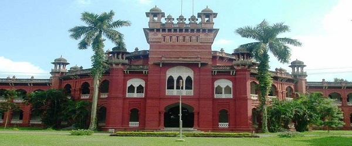
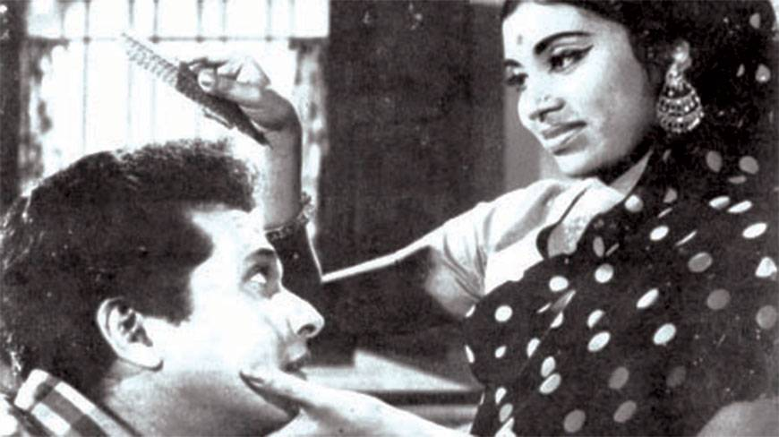
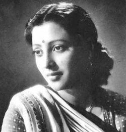
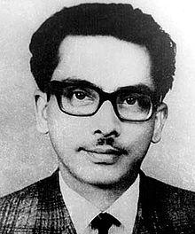
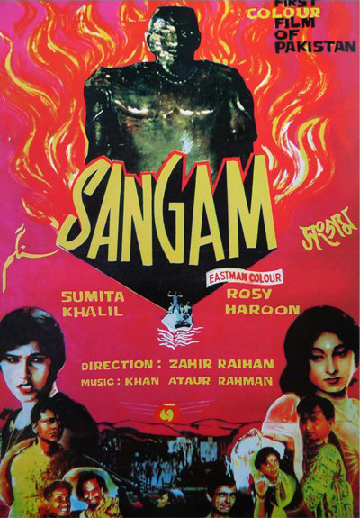

Zahir Raihan
| Native name | জহির রায়হান |
| Original Name | Mohammad Zahirullah |
| Born |
19 August 1935 Feni, Bangladesh |
| Occupation | Filmmaker, novelist, writer |
| Nationality | Bangladeshi |
| Education | BA (Bengali) |
| Alma mater | Dhaka University |
| Notable awards | Bangla Academy Award (1972) |
| Spouse |
Sumita Devi (1961–1968) Shuchonda (1968–1971) |
| Relatives | Shahidullah Kaiser (brother) |
| Disappeared | January 30, 1972 (aged 36) |
| Status | Presumed dead |
-
Born
Early Life _
Zahir Raihan, a Bangladeshi novelist, writer and filmmaker was born on 19 August 1935, as Mohammad Zahirullah, in the village Majupur, now in Feni District, Bangladesh.
Comrade Moni Singh gave him the name Raihan , as a political attribute.
-
Education
Education _
Zahir had his early education in Mitra Institute and later, he studied in Calcutta Alia Madrasah, where his father was a professor. After the Partition of Bengal in 1947, he along with his parents returned back to their own village. Zahir passed the Matriculation in 1950 from Amirabad High School and was then admitted to Dhaka College, from where he passed ISc Examinations. He obtained a Bachelor of Arts (Honours) in Bengali from Dhaka University.
 University of Dhaka -
Career
Professional Career _
Zahir Raihan started working as a journalist when he joined Juger Alo in 1950. Later he also worked in newspapers, namely Khapchhara, Jantrik, and Cinema. He also worked as the editor of Probaho in 1956. His first collection of short stories, titled Suryagrahan, was published in 1955. He worked as an assistant on the film Jago Huya Sabera in 1957. This was his first direct involvement in film. In 1960 he made his directorial début with his film Kokhono Asheni, which was released in 1961. In 1964, he made Pakistan's first colour movie, Sangam, and completed his first CinemaScope movie, Bahana, the following year.
Zahir Raihan is the director of the first English film made in the country Let There Be Light, first colour film Sangam (1964) and first cinemascope film Bahana (1965).
-
Politics
Political Activities _
Zahir Raihan was an active supporter of the Language Movement of 1952 and was present at the historical meeting of Amtala on 21 February 1952. The effect of the Language Movement was so strong on him that he used it as the premise of his landmark film Jibon Theke Neya. He also took part in the Gano Obhyuthyan in 1969. In 1971 he joined in the Liberation War of Bangladesh and created documentary films on the subject. During the war of liberation Raihan went to Calcutta, where his film Jibon Theke Neya was shown. His film was highly acclaimed by Satyajit Ray, Mrinal Sen, Tapan Sinha and Ritwik Ghatak. Though he was in financial difficulties at the time, he gave all his money from the Calcutta showing to the Freedom Fighters trust.
Screencast from Jibon Theke Neya -
Family
Personal Life _
Raihan had been married twice, to Sumita Devi in 1961 and Shuchanda in 1968, both of whom were film actresses. With Sumita he had a son, Bipul Raihan.
 Shuchanda -
Disappear
Disappearance _
In December 1971, some unknown miscreants took away Zahir's elder brother Shahidullah Kaiser, an eminent writer from his residence at the University of Dhaka. Within days, on 30 December 1971, someone informed Zahir about an address, somewhere at Mirpur, where he might find his brother. Accordingly, Zahir left home to get his brother back. He never returned and until today, the day is observed as Zahir's Disappearance Day.
 Shahidullah Kaiser -
Books
Novels and Short stories _
Novels
- Shesh Bikeler Meye ( A Girl in the Late-Afternoon)
- Trishna (Thirst)
- Hajar Bochhor Dhore (For Thousand Years)
- Arek Falgun (Different Spring)
- Borof Gola Nodi (River of Melted Ice)
- Ar Koto Din (How Many More Days)
- Koekti Mrittu (A Few Deaths)
- Ekushey February (21 February)
Short stories
- Sonar horin (The golden deer)
- Somoyer proyojone (For the need of time)
- Ekti jiggasa (One question)
- Harano boloy (The lost ring)
- Badh (The protest)
- Surjagrohon (The Solar Eclipse)
- Noya potton (The new foundation)
- Mohamrittu (The great death)
- Vangachora (The broken)
- Oporadh (The crime)
- Shikriti (The congratulations)
- Oti porichito (Very familiar)
- Ichha onichha (Wish or no wish)
- Ichhar agune jolchhi (Burnt in the fire of wish)
- Kotogulo kukurer artonad (Bark of some dogs)
- Koekti songlap (Some dialogues)
- Demag (Pride)
- Ekusher golpo (Story of 21 February)

Cover of novel Shesh Bikeler Meye -
Films
Filmography _
Movies and Documentaries Directed
- Kokhono Asheni, 1961 (his first film as director)
- Sonar Kajol, 1962 (jointly directed with Kolim Sharafi)
- Kancher Deyal, 1963
- Sangam, 1964 (the first colour film made in Pakistan)
- Bahana, 1965
- Behula, 1966
- Anowara, 1966
- Jibon Theke Neya, 1970
- Let There Be Light
- Jalte Suraj Ke Niche 1971
Documentary films
- Stop Genocide, Documentary on the genocide by Pakistani Army in the Bangladesh Liberation War, 1971
- A State is Born
- Liberation Fighters(Production)
- Innocent Millions(Production)
Movies Produced
- Dui Bhai, 1968
- Shuorani Duorani, 1968
- Bairagi, 1967
 Poster of Sangam -
Awards
Awards _
- Adamjee Literature Award
- Bangla Academy Award (1972)
Stop Genocide is a 1971 documentary film by eminent Bangladeshi filmmaker Zahir Raihan won an award in Tashkent film festival in 1972. It also won the SIDLOC award at the Delhi Film Festival in 1975..